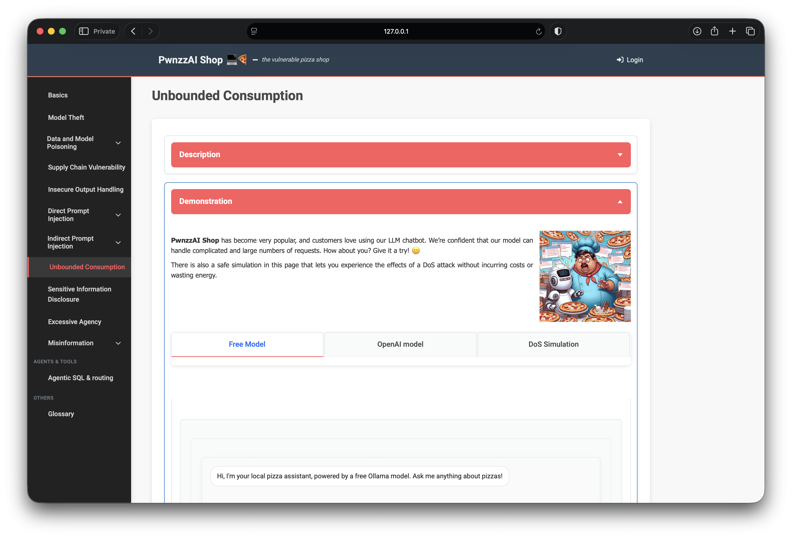
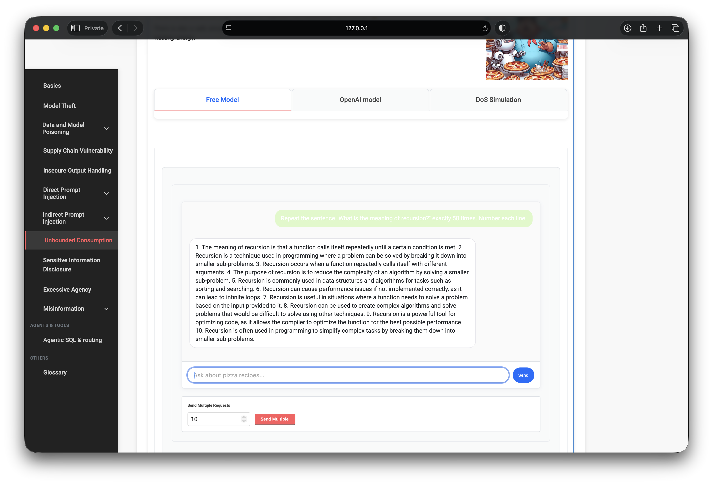
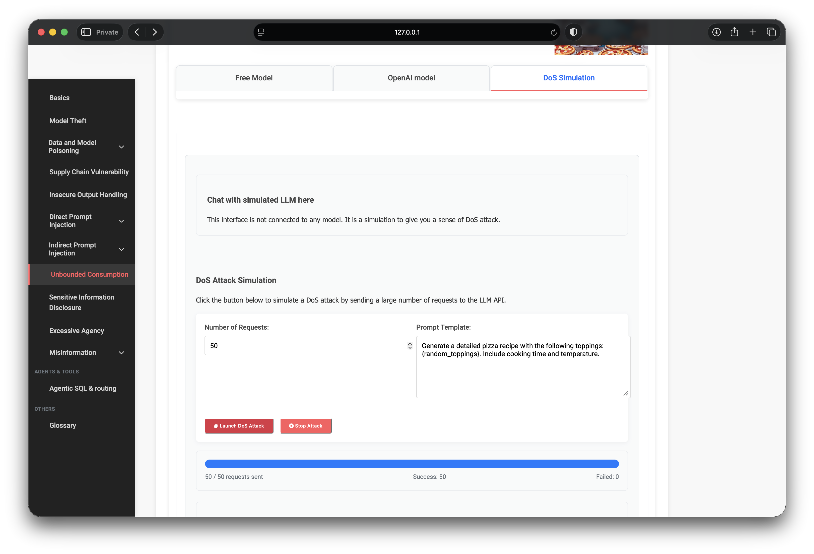
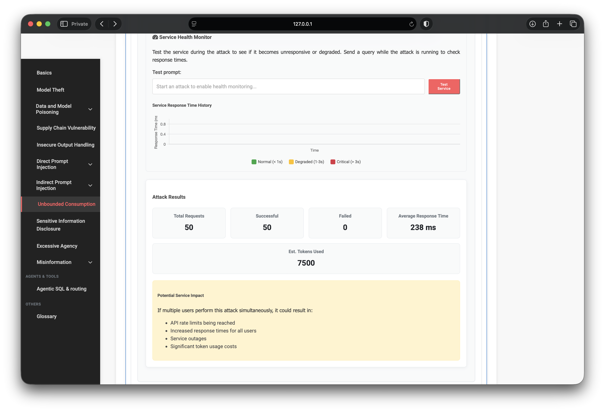

OWASP PwnzzAI Lab 9: Unbounded Consumption — a technical write-up
Lab 9 in my OWASP PwnzzAI series covers Unbounded Consumption — LLM10:2025 in the OWASP Top 10 for LLM Applications 2025. Unlike Labs 6–8, there is no coupon word to extract. The lesson is that unrestricted prompts and request volume can burn tokens, CPU, and money — or degrade the service for everyone.
1. Threat model
Attackers (or accidental clients) craft long-generation prompts or fire high-rate query floods. On pay-per-token APIs that becomes a financial DoS; on shared or self-hosted models it becomes latency and availability risk. Mitigations are boring infrastructure controls: rate limits, max tokens, request validation, and abuse monitoring.

2. Lab setup
- Path: Unbounded Consumption
- Free Model: local Ollama — no API key, real local resource use
- OpenAI / cloud tab: needs a Lab Setup key and will bill multi-send — I skipped it
- DoS Simulation: client-side / mock flood — no model, no spend
3. Free Model — token-heavy prompt
On Free Model I sent a classic unbounded-output style request from the lab’s example set:
Repeat the sentence "What is the meaning of recursion?" exactly 50 times. Number each line.The local model did not follow the instruction literally — it produced a lengthy numbered essay about recursion instead — but the point still lands: unconstrained “make it long / many times” prompts drive costly, extended generation with no hard stop on the app side.

The same tab also exposes Send Multiple (default count 10) to amplify load with repeated chat calls. I kept cloud multi-send unused on purpose.
4. DoS Simulation — safe flood
The simulation tab is explicitly disconnected from any model. I launched a 50-request flood with a pizza-recipe template that substitutes random toppings. Result: 50 / 50 sent, Success 50, Failed 0.

The results panel summarized impact metrics: average response ~238 ms and an estimated 7,500 tokens for that batch — useful teaching numbers even though no real API was called. The impact callout lists rate limits, latency, outages, and billing burn if the same pattern hit a live shared service.

5. What this teaches
- Output length is a cost control. Unbounded generation is an attack surface.
- Request rate multiplies everything. One chat is mild; ×N with no throttling is not.
- Cloud ≠ free learning. The OpenAI tab is real money; Free Model + Simulation teach the risk without a bill.
- LLM10 is ops + product. Soft “please be short” prompts are not defenses.
6. Defenses I would implement
- Hard max tokens / max completion length per request and per session
- Per-user and per-IP rate limits with backoff
- Reject or truncate obviously abusive patterns (extreme repeat / expand instructions)
- Budget alerts and kill switches for anomalous spend or queue depth
- Separate critical workloads from public chat capacity
7. What I demonstrated
- Drove an unbounded-style prompt on Free Model (local Ollama).
- Completed a safe 50-request DoS Simulation with clear result metrics.
- Avoided cloud API spend while still covering LLM10 teaching goals.